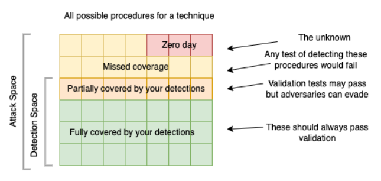

detection-engineering
definition
practical threat detection engineering Detection engineering definition Detection engineering can be defined as a set of processes that enable potential threats to be detected within an environment. These processes encompass the end-to-end life cycle, from collecting detection requirements, aggregating system telemetry, and implementing and maintaining detection logic to validating program effectiveness.
good-detection
practical threat detection engineering
Evaluation criteria to judge good detection - the ability to detect adversary - detection coverage - detection durability - the cost of that ability to the organization - the cost to the adversary to evade detection
the ability to detect adversary
can be broken to detection coverage and detection durability. Coverage is scope of activity that detection identifies. (example coverage over MITRE). While durability is how long the detection to be effective. Increasing a detection’s coverage by detecting multiple procedures associated with a technique or creating a detection that works across multiple techniques often increases the complexity of the detection but can also improve a detection’s durability.
the cost of that ability to the organization
this covers the creation, running, and maintenance of detections, the resources spent reviewing associated alerts, and the actions taken based on those alerts some factor that contribute: - complexity: how hard to understand the detection for maintenance - staleness: continued effectiveness - confidence: how noisy is the detection (false positive rate) - impact: potential impact of the detection - actionability: how easy it is for a SOC analyst to leverage the detection to either further analyze the threat or remediate it. - specificity: As an example, a machine learning model may provide increased coverage in detection with a high confidence level but may be unable to explain specifically why the alert was created For example, a detection might identify reconnaissance scanning of the network. The lack of actionability on this activity, despite the confidence in the detection, might result in the noisiness of the detection being unacceptable.For example, a detection might identify reconnaissance scanning of the network. The lack of actionability on this activity, despite the confidence in the detection, might result in the noisiness of the detection being unacceptable.
cost to the adversary
this is related to the pyramid of pain.
advantages-of-detection-program
practical threat detection engineering key advantages:
- detection bundles that come with vendor is one size fit all. Homebrew detection will get specific with your need
- standardized detection rule and version controlled rule
- automated testing
- cost and time saving
Standardized detection rule and version controlled
detection program will set standards for how detections are written. This allows the code to be easily understood and compatible with detection solutions. Also a detection repository should be leveraged, so code is version controlled, previewed and tested.
Automated testing
reduced the risk code introducing error into prod. automation also decrease time and cost for engineer vs manual testing.
- [ ] continue chapter 2 on practical threat detection book
types-of-rules
[[Atomic & Stateful Detection Rules]]
atomic detection: focus on single, isolated events or activities that can be identified as malicious or benign without further context. These are quick and precise but limited in scope.
stateful detection: often called correlation rules, rely on analyzing multiple events over time to build context and detect patterns of malicious behavior. They offer more depth but come with added complexity.
Simply put, atomic detections focus on identifying a single event as potentially harmful, while stateful rules analyze multiple events to reveal behaviors that might indicate a larger issue.
life-cycle
practical threat detection engineering
flowchart LR
Requirement --> Triage --> Investigate --> Develop --> Test --> Deploy
Investigate --> Requirement
Deploy --> Develop
Continuous activity inside life cycle ^ContAct Aside from the life cycle, this activity is done continuously: ^065d90 - Monitoring: know your current detection - Maintenance: see if there need to be update/ changes - Metrics: is it too noisy? is it too quite? how much is FP rate? performance of the detection - too much resource hogging? - Validation: simulate or use detection assessment ^7db3dd
requirement
things to include in the requirement: requesting party, description, reason, exception, scope, evidence
The requirement come from CTI, business requirement - legal, red team exercise, SOC request, and [[detection-engineering#^7db3dd| continous activity]].
triage
output: triaged and prioritized requirements
Triage the requirement using: - severity of the threat - is this an active exploit: log4j! (see common ways of judging exploit severity: is our estate affected, how easy it is to exploit, impact, is it currently happening, how fast to patch) - organizational alignment with the threat: - detection coverage
severity of the threat
system of scoring that you assign to threat severity. e.g. CVSS, DREAD, NIST CMSS, custom?
organizational alignment
a scoring system that see if detection related to the threat is something we should worry about. e.g. 0 - threat is irrelevant, while 4 - threat specifically target your org.
detection coverage
another scoring system. e.g. 0 - this technique detection have in depth coverage; 1 - this technique detection need update; 2 - this technique detection is not present another point to think about is how the new requirement is an improvement of current detection
investigate
output
Detection of technical specifications and data engineering requirements (if applicable).
steps
- identify data source: what is needed to detect the requirement, do we have this?
- determine indicator type:
- atomic, behavior, hybrid and
- context: context is important! do you search IP in
src.ipordst.ip? or just*.ip. Also understand your environment for context. e.g. do you search for IP in your EDR telemetry? firewall? network appliances ? VPN logs?
- research: identify attacker goals and TTP, see our current TTP coverage is this TTP already detected? can this requirement improve? do we need new one? think of variation of the techniques that needed to be detected.
- establish validation criteria: identify how to test detection
read more on [[detection-engineering-data-source|data sources]]
tools
Ticketing and communication system: take and document requirements. see if possible integration of both ticket and comm. system. Knowledge base: document requirement, detection, alert, etc. Standards: have a set of standards to communicate technical information, CVSS, MITRE, OCSF, etc.
on Knowledge base system ^KnowledgeBaseNote KB system can be use to document requirements, detection, details of alert, playbook. Another important information to record is details of data source, this way an investigation phase on a data source do not need to be conducted again when a detection calls for the same data source. Important that these knowledge base follow a certain nomenclatures/ standards in describing these data. ^a94351
develop
output: detection code
this step consist of: design, development, and unit testing. things to keep in mind: - cost of detection. There are side to this point, you can see: - do this detection need to run real-time? if not how many times a day should it run? - how specific should the query be? overly specific will have true negative, and overly general will be too noisy/ false positive. - these thing will also show up in next step i.e. testing - [ ] is there any writing on cost of detection, false positive fatigue etc. ⏫ - standards: this goes for details and wording in alert, this will determine how easy it is for SOC to action on.
- [x] continue from here on book detection eng. ⏫ ✅ 2025-02-10
testing
Test-driven development is a software development technique that adapts well to this purpose. Tests are designed before development and are first added to the automated acceptance testing infrastructure. The development process starts with running the tests against your existing detection capabilities. This may result in you identifying already existing detection capabilities or confirming the failure of these tests, which identifies the need to create or update a detection. During the development process, these tests are continuously applied and used to influence the improvement of the detection
In general, these ad hoc tests should keep the following goals in mind: - identify scenarios false positive - identify for evasion from detection - identify incomplete detection: These should highlight detection definitions that are too loosely defined and do not correctly identify all permutations of the event to be detected.
deploy
Output: Deployed detection code
things to keep in mind:
deployment tags
Use deployment tags to differentiate between deployed detection (e.g. experimental - not tested, tested - deployed; tested; LowPriority , stable - fully deployed)
documentation (also see [[detection-engineering#^a94351]] )
Documentation should have a set of standards on what to document and how to document it. A minimal of these information should be available on documentation: - Information used to maintain detection author, creation date and revision history, maturity (see [[detection-engineering#deployment tags]]), references - Information on the detection name, description, TTP, tags, the detection, data sources - information on how to action on detection related detection (to help confirm true positive), investigation suggestion, remediation actions, false positive (what action is know false positive), severity, confidence
maintain coverage map (see [[detection-engineering#^065d90]])
detection-components
This is a simplified version of components on a detection
- Event forwarding: forward events from assets. e.g. beats, elastic agent. Another part of the component is the management of agent. e.g. fleet server
- Log collection and processing: this component collect and pre-process logs. e.g. elasticsearch, logstash
- Detection and detection development: this component provide detection and detection development capability. e.g. elasticsearch
- Monitoring and alerting: this component provide implementation of detection and interface for monitoring and alerting. e.g. Kibana
- Detection engineering pipeline
- repository
- testing and validation
- [ ] continue at page 193 practical threat detection eng. book⏫
detection-validation
we have looked at coverage as surface area (i.e. compare to mitre), another thing to look at it is durability.
If a detection is identifying an indicator on the lower echelons of the pyramid of pain, or anywhere there is an almost infinite number of variations that the adversary can change to execute the attack, the durability is limited to the ops-tempo of the adversary changing that part of the attack. As an example, if your detection is limited to an IP address or domain, there are almost unlimited variations of the IPs or domains used by the adversary. The durability is thereby associated with how often the adversary changes this infrastructure.
This is also related with technique and procedures and procedures variation. When validating, test if all procedures in a technique is covered, and test if procedures variation is covered. here it is in pseudocode:
If detection_of_procedureA OR detection_of_procedureB OR detection_ of_procedureC ALERT ON TechniqueXYZ.
 practical threat detection engineering
Based on those theses, when building detection: the indicator with the least amount of variability is the choke point for that procedure is the one we use to build detection, and this is also where our validation level should be.
maturity-model
[[maturity-model]] for detection engineering https://detectionengineering.io/ - [ ] read on [[Elastic releases the Detection Engineering Behavior Maturity Model — Elastic Security Labs]]